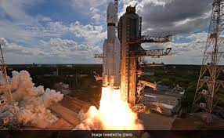

SHORT INSPIRATIONAL STORIES WITH A MORAL [MOTIVATIONAL STORIES]
Adhithya L1
a remarkable stride towards understanding the universe’s most luminous entity, the Indian Space Research
Organisation (ISRO) has unveiled the launch details of the Aditya L1 mission—a pioneering endeavor to study the
Sun. This ambitious mission is set to offer unparalleled insights into solar activities and space weather
phenomena, marking a significant advancement in India’s space exploration journey.
Aditya L1’s Halo Orbit: A Window to Sun’s Secrets
Positioned at Lagrange point 1 (L1),
a staggering 1.5 million kilometers from Earth, the Aditya L1
spacecraft will embrace a halo orbit around the Sun. This strategic vantage point will allow Aditya L1 to
continuously observe the Sun without any disruptions caused by occultation or eclipses. This orbit brings forth
an unprecedented opportunity to monitor solar activities in real time, enhancing our understanding of the Sun’s
dynamic behavior and its influence on space weather.
Payloads Unveiling the Sun’s Mysteries
Aditya L1, the first Indian space-based mission dedicated to studying the Sun, is equipped with a suite of seven
payloads. These payloads are meticulously designed to explore various layers of the Sun, including the
photosphere, chromosphere, and the enigmatic corona. Through a combination of electromagnetic, particle, and
magnetic field detectors, Aditya L1 will unravel the intricacies of these regions, shedding light on phenomena
like coronal mass ejections, solar flares, and the dynamics of space weather.
September 2, 2023: Date with the Sun
Mark your calendars for a historic event in India’s space odyssey.
On September 2, 2023, at 11:50 AM
IST, the Aditya L1 mission is poised for liftoff from Sriharikota. As the countdown commences, anticipation
grows for the launch that will send a message of India’s scientific prowess and commitment to unraveling the
mysteries of the cosmos.
Neeraj Chopra
Neeraj Chopra emerged as a beacon of skill, dedication, and triumph in a world that often misunderstands the
intricacies of javelin throwing. At the World Athletics Championships, he didn’t just win gold; he unveiled
the champion within himself and redefined the notion of excellence in his sport. He turned the skeptics into
believers and the spectators into admirers, leaving a resounding impact on India’s sporting landscape.
A Setback Forges Resilience: Neeraj Chopra’s Determination
Behind the glory, however, lies a tale of grit. A career-threatening elbow injury forced Neeraj to the
sidelines, questioning his dreams and aspirations. It was in this crucible of adversity that his resilience
was forged. Neeraj didn’t just recover; he reinvented himself. With unwavering determination and a fierce
work ethic, he transformed the setback into a stepping stone. His journey back to the field was marked by
endless hours of rehabilitation, mental fortitude, and an unbreakable spirit.
Beyond the Field: Neeraj Chopra’s Life Story
Neeraj Chopra’s journey is not confined to the javelin runway; it’s a narrative that transcends the lines of
a sporting arena. Raised in a humble family in Haryana, his rise to prominence is a testament to the power
of dreams. From early childhood, Neeraj displayed an innate passion for sports, and his family’s support
became the cornerstone of his journey. With limited resources, he forged his own path, displaying an
indomitable spirit that would soon become his trademark.
Redefining Excellence: Neeraj Chopra’s Training Regimen
Neeraj Chopra’s ascent wasn’t solely a result of natural talent; it was a product of rigorous training,
meticulous planning, and relentless dedication. His training regimen pushed the boundaries of what was
considered possible in javelin throwing. From honing his technique to perfecting his strength and
conditioning, Neeraj left no stone unturned. His meticulous approach not only elevated his own performance
but also inspired a generation of aspiring athletes across India.
Global Glory and National Pride: Neeraj Chopra’s Olympic Triumph
Neeraj’s victory at the World Athletics Championships was a glimpse of what was yet to come. The 2020 Tokyo
Olympics witnessed a defining moment in Indian sports history as he clinched the gold medal, becoming the
first Indian to do so in track and field. The tricolor flew high as Neeraj’s throw reverberated across the
world, filling hearts with pride and eyes with tears of joy. His triumph was more than a medal; it was a
testament to the unyielding spirit of a nation.
Neeraj Chopra’s journey has transcended geographical boundaries to become a beacon of inspiration worldwide.
His rise from adversity, his commitment to his craft, and his unassuming demeanor have captured the hearts
of millions. Neeraj’s story reminds us that greatness isn’t confined to records or titles; it’s the
embodiment of hard work, resilience, and a burning desire to make a difference.
Unleashing Potential: Neeraj Chopra's Path to Greatness
Chandrayaan-3

The Indian Space Research Organisation (ISRO) is gearing up for the highly anticipated Chandrayaan-3
mission, scheduled to take off from the Satish Dhawan Space Centre in Sriharikota, Andhra Pradesh, on July
14.
Aims and Objectives of Chandrayaan-3
Building upon the previous mission, Chandrayaan-2, the upcoming Chandrayaan-3 aims to demonstrate key
capabilities, including reaching the moon’s orbit, making a soft landing on the lunar surface, and deploying
a rover to study the moon’s terrain.
The Journey to the Moon
After the scheduled lift-off at 2.35 pm IST, approximately 16 minutes later, the propulsion module will
separate from the rocket and begin its elliptical orbit around the Earth. This orbit will involve five to
six cycles, with the closest distance to Earth at 170 km and the farthest at 36,500 km, gradually moving
towards the lunar orbit.
Chandrayaan-3’s Lunar Arrival
ISRO scientists have tentatively set the goal of reaching the moon’s surface with a soft landing by August
23-24, positioning India among the elite nations to achieve this remarkable feat. The development of
Chandrayaan-3 commenced in January 2020, with original plans for a launch in 2021. However, due to the
COVID-19 pandemic, the project faced delays in its development process.
Legacy and History of Chandrayaan Missions
The Chandrayaan program was announced by the late Prime Minister Atal Bihari Vajpayee in 2003.
Chandrayaan-1, launched in 2008 from the Satish Dhawan Space Centre, provided significant insights into the
moon’s water molecules despite its crash near the lunar South Pole. In 2019, Chandrayaan-2 continued the
exploration, with the Vikram Lander separating while orbiting the moon. Although communication with the
lander was lost, the mission provided valuable data from its lunar polar orbit.
Also Read: Entrepreneur Umang Ratani’s Insights into Conquering the Business World.
sSignificance of Chandrayaan-3’s Payloads
Unlike its predecessor, Chandrayaan-3 features an essential payload within the Propulsion Module known as
SHAPE (Spectro-polarimetry of HAbitable Planet Earth). SHAPE enables the study of Earth from the lunar
orbit, focusing on spectro-polarimetric signatures in the near-infrared wavelength range. Additionally, the
Propulsion Module carries the Lander Module, which is equipped with payloads such as RAMBHA-LP, measuring
plasma ions and electron density near the lunar surface, ChaSTE for thermal property measurements, and ILSA
to study seismic activity and the lunar crust and mantle structure.
Rover’s Role in Lunar Exploration
Following the soft landing, the rover will emerge from the lander module to explore the lunar surface. It
will utilize the APXS (Alpha Particle X-Ray Spectrometer) payload to analyze the chemical composition and
infer the mineralogical composition of the moon’s terrain. The rover’s mission life spans 14 Earth days (one
lunar day) and includes another payload called LIBS (Laser Induced Breakdown Spectroscope) to determine the
elemental composition of lunar soil and rocks near the landing site.
Chandrayaan-3 represents a significant milestone in India’s space exploration endeavors, aiming to expand
our understanding of the moon’s surface and contribute to scientific advancements in lunar research.
Also Read: The Windmill Wizard, Igniting Hope through Invention and Perseverance.